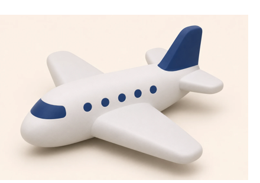
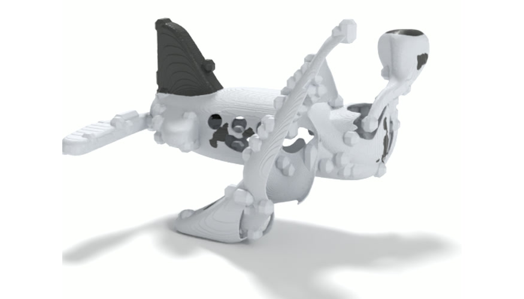

Remove supports. Look inside. Observe the generated pose.
Loading 3D examplesGenerated shape Sliced supports
RIGID-BODY REPLAY
Preparing the 3D space…
SLOW ORBITHOVER TO PAUSE · DRAG TO INSPECT
Details
Evidence & measurements
Select an example for its weight breakdown.
Grams from the slicer, not a physical scale.
No validated numerical replay is currently available.
Unavailable tests are not classified as standing. Rotation away from the original pose is not a printability certificate.
Real-print evidence
Support removal is illustrative. Cutaways show the surface mesh, not printed infill. Numerical standing replays are not yet available; stationary previews are not test results.
Browse every group. Switch between geometry, support use and real prints using the controls on the right.
ONE INPUT · SIDE-BY-SIDE COMPARISON
Look closer. Compare.
Matched views, a shared rotation rate, and the evidence behind each example.
Loading 3D examplesGenerated shape Sliced supports
RIGID-BODY REPLAY
Preparing the 3D space…
SLOW ORBITHOVER TO PAUSE · DRAG TO INSPECT
Details
Evidence & measurements
Select an example for its weight breakdown.
Grams from the slicer, not a physical scale.
No validated numerical replay is currently available.
Unavailable tests are not classified as standing. Rotation away from the original pose is not a printability certificate.
Real-print evidence
How to read these examples
Availability is model-version specific. Chair, cat, poodle, Christmas tree and penguin have sliced-support bundles. Koala and kangaroo have current SAS display models and real-print evidence, but no verified support bundle bound to these GLBs. Penguin has no verified baseline in this viewer. Chair and penguin use the first prepared web bundle; newer print revisions await matching web exports. Missing evidence is labelled, never replaced with another model’s data.
Support grams are slicer estimates. Support share = support ÷ (model-channel material + support); the model channel includes brim where used. Purge and prime-tower material are excluded. The blue fragments sample actual sliced support paths. Breaking, sweeping and collecting are illustrative; the numbers are not calculated from the animation. Weight data and definitions ↗
Cutaways show the display mesh. The cyan contour is its intersection with a horizontal plane. We do not infer internal walls, infill, or G-code. Automatic turntables rotate display wrappers only and stop during the standing phase; stored simulation poses remain unchanged. Koala and kangaroo are independently display-normalised; their onscreen sizes must not be used to compare physical dimensions.
Numerical standing replays are pending. The intended separate 10-second flat-ground rigid-body replay will only be shown after validated trajectories are available. Fixed bodies and unavailable timers are not evidence of successful standing. The planned uniform-solid dynamics differ from sliced-print mass distribution and the paper’s evaluation. Disconnected surfaces are unsupported by the current protocol, not silently fused. Real-print footage below is distinct evidence.
HOW IT WORKS
Three objectives. Standability as the anchor.
The first-stage occupancy exposes the floor contact, mass distribution and overhangs needed to score both physical objectives.
01
Start where the structure is decided.
Only the first-stage sparse-structure flow transformer of TRELLIS.2 is post-trained. Its fixed decoder produces a 64³ occupancy grid; the later stages retain their pretrained fine-shape and appearance generation.
Single input imageStage (i) updatedLater stages unchanged
02
Three objectives. One occupancy grid.
A centre-of-mass margin rewards standability. A slicer-inspired surrogate accounts for solid walls, sparse infill and overhang supports. Image-conditioned geometry rewards help retain the depicted shape. No simulator or slicer is queried for online reward evaluation.
StandabilityMaterial efficiencyGeometric fidelity
03
Standability sets the pace.
SAS compares reward attainment with cached per-image reference levels from the frozen base model. Standability attainment gates the geometry and material weights; their relative attainment gaps determine which receives more emphasis.
Group-standardised rewards form advantages for the DiffusionNFT update. SAS changes the reward weights, not the update objective. The architecture and deterministic sampler are retained, with no added inference-time optimisation.
Standability first. When too few samples reach the base model’s reference level, geometry and material receive reduced weight.
Emphasise what lags. As the standability gate opens, the less-attained of geometry and material receives more emphasis.
These are a schematic explanation of the current method, not measured training curves. Reward fitting uses a one-off slicer calibration; online reward evaluation does not query a simulator or slicer.
QUANTITATIVE RESULTS
Three benchmarks. The full trade-off.
Among the evaluated methods, SAS has the highest standable rate and the lowest total and support material on all three benchmarks.
Out-of-domain · 625 inputs
HY3D-Bench
98.2%standable rate84.8% for TRELLIS.2
−11.8%total material vs TRELLIS.214.81 → 13.06 g · slicer estimate
Table 2 · HY3D-Bench · means over three seeds
Method
Stand. (%) ↑
Sim. (%) ↑
Total (g) ↓
Total Δ (%) ↓
Support (g) ↓
Support share (%) ↓
CD ↓
F-score ↑
CLIP ↑
KD ↑
TRELLIS.2
84.8
95.4
14.81
—
2.92
19.7
15.32
0.954
92.84
16.40
DSO-DPO
85.3
96.3
14.74
-0.4
2.92
19.8
15.51
0.949
92.87
16.40
DSO-DRO
85.4
95.6
14.84
+0.2
2.96
20.0
15.42
0.951
92.85
16.37
SEG
85.3
96.0
14.77
-0.2
2.97
20.1
15.29
0.952
92.89
16.47
+ DensiCrafter
94.5
97.8
15.46
+4.5
5.33
34.4
16.97
0.953
90.69
12.53
PhysRL3D-SAS
98.2
99.8
13.06
-11.8
2.29
17.5
12.78
0.981
93.73
17.53
In-domain · 1,992 held-out objects
Objaverse
93.6%standable rate60.1% for TRELLIS.2
−19.2%total material vs TRELLIS.210.81 → 8.74 g · slicer estimate
Table 2 · Objaverse · means over three seeds
Method
Stand. (%) ↑
Sim. (%) ↑
Total (g) ↓
Total Δ (%) ↓
Support (g) ↓
Support share (%) ↓
CD ↓
F-score ↑
CLIP ↑
KD ↑
TRELLIS.2
60.1
81.4
10.81
—
2.26
20.9
33.06
0.777
87.44
9.96
DSO-DPO
59.0
80.6
10.41
-3.7
2.37
22.8
34.11
0.764
87.50
9.94
DSO-DRO
59.3
81.2
10.53
-2.6
2.38
22.7
33.93
0.766
87.52
10.00
SEG
59.4
80.1
10.40
-3.8
2.36
22.7
34.14
0.763
87.47
9.96
+ DensiCrafter
80.7
90.3
11.54
+6.5
4.24
36.8
33.20
0.786
86.25
8.60
PhysRL3D-SAS
93.6
96.4
8.74
-19.2
1.26
14.4
32.04
0.785
88.72
10.76
Out-of-domain · 174 objects
Toys4K
97.7%standable rate68.6% for TRELLIS.2
−14.7%total material vs TRELLIS.212.93 → 11.03 g · slicer estimate
Table 2 · Toys4K · means over three seeds
Method
Stand. (%) ↑
Sim. (%) ↑
Total (g) ↓
Total Δ (%) ↓
Support (g) ↓
Support share (%) ↓
CD ↓
F-score ↑
CLIP ↑
KD ↑
TRELLIS.2
68.6
88.9
12.93
—
2.62
20.2
48.29
0.669
85.75
5.84
DSO-DPO
59.0
88.5
12.88
-0.4
2.98
23.1
49.31
0.648
85.70
5.84
DSO-DRO
63.0
89.5
13.19
+2.0
3.15
23.9
50.01
0.647
85.89
5.94
SEG
57.1
86.4
12.66
-2.1
3.03
23.9
48.71
0.651
85.79
5.89
+ DensiCrafter
82.6
90.0
13.35
+3.2
4.06
30.4
48.68
0.669
84.85
5.21
PhysRL3D-SAS
97.7
97.9
11.03
-14.7
1.39
12.6
52.87
0.628
86.99
7.05
A visible trade-off: SAS improves standability and material use, but its CD and F-score trail TRELLIS.2 on Toys4K.
Stand. Component-wise static balance on a 64³ grid. Sim. The separate MuJoCo test used by DSO. Total / Support Mean slicer-estimated grams. Δ is relative to TRELLIS.2.
Fidelity CD (×10³), F-score, CLIP and KD compare against ground truth. KD is a DINOv2 RBF-kernel similarity. HY3D-Bench fidelity excludes 25 multi-object scenes. Best values are bold; second best are underlined.
Training uses 2,000 Objaverse conditioning images for 80 epochs. Means cover three training seeds for post-trained methods, or three generation seeds for TRELLIS.2 and DensiCrafter. The Objaverse evaluation assets do not overlap the training assets.
REAL-WORLD FABRICATION
Beyond the screen. On the table.
Selected real objects, printed on a Bambu Lab H2D and inspected after support removal. These demonstrations complement the benchmark; they are not a claim that every individual print is lighter.
Bambu Lab H2D, PLA, the slicer's default tree supports and 15% infill; white = object, blue = support. Weights are read
from a kitchen scale with 1 g resolution, with the supports attached and after removing them.
One example, all its evidence. Choose a group to see its input, methods, support photos, footage and weights.
Kangaroo · group 1 of 3
EXAMPLE 01 · PAIRED REAL PRINTS
Kangaroo: TRELLIS.2 falls over once its supports are removed
Both prints use about 2 g of support. After removal, the TRELLIS.2 kangaroo falls over and the PhysRL3D-SAS kangaroo stands. The SAS body is heavier: 15 g against 11 g.
The TRELLIS.2 kangaroo, placed upright and released (real time).Further attempts from other directions (real time).
Measured print weights
Kangaroo · physical measurements, not slicer estimates
Method
With supports
Body
Supports
After removal
Kangaroo, TRELLIS.2
13 g
11 g
2 g (15%)
falls over
Kangaroo, PhysRL3D-SAS
17 g
15 g
2 g (12%)
stands
EXAMPLE 02 · PAIRED REAL PRINTS
Koala: both stand; PhysRL3D-SAS prints a lighter body
Both koalas weigh 22 g with their supports and both stand once the supports are removed. The PhysRL3D-SAS body weighs
17 g against 19 g for TRELLIS.2, but its supports weigh 5 g against 3 g.
TRELLIS.2
with supportssupports removed
✓ stands without supports
PhysRL3D-SAS
with supportssupports removed
✓ stands without supports
Front view after support removal: TRELLIS.2 (left), PhysRL3D-SAS (right).The same two prints from behind: PhysRL3D-SAS (left), TRELLIS.2 (right).
Measured print weights
Koala · physical measurements, not slicer estimates
Method
With supports
Body
Supports
After removal
Koala, TRELLIS.2
22 g
19 g
3 g (14%)
stands
Koala, PhysRL3D-SAS
22 g
17 g
5 g (23%)
stands
EXAMPLE 03 · MIXED EVIDENCE, LABELLED BELOW
Airplane: simulation and a physical print

The TRELLIS.2 airplane is shown through archived before/after rigid-body simulation states, not a physical print. Tipping in this test does not establish that a shape cannot be printed. The PhysRL3D-SAS airplane prints with 2 g of supports (6 g object) and rests flat once they are removed.
TRELLIS.2

simulation, at releasesimulation, after release
Tips in simulation · no baseline print shown
PhysRL3D-SAS
with supportssupports removed
✓ rests flat without supports
Measured print weights
Airplane · physical measurements, not slicer estimates
Method
With supports
Body
Supports
After removal
Airplane, TRELLIS.2
not printed; simulation only
–
Airplane, PhysRL3D-SAS
8 g
6 g
2 g (25%)
rests flat
These selected objects were scaled to 100 mm. Scale resolution: 1 g. Do not compare these measured values directly with Table 2’s slicer estimates.
SCOPE & EVIDENCE
A few important distinctions.
Does simulator-free mean no simulation anywhere?
No. Online reward computation during post-training does not query a simulator or slicer. Evaluation separately uses the MuJoCo test of DSO and a fixed slicer profile. The qualitative Blender rigid-body demonstrations are another, distinct test.
What does material use include?
Table 2 reports slicer-estimated total material, including the object and its disposable supports, under a fixed profile. These estimated grams are not kitchen-scale measurements. The training material surrogate ranks candidates; it is not an exact predictor of printed mass.
Does every printed object use less material?
No. The benchmark averages show lower slicer-estimated material. The selected physical prints in the paper demonstrate fabrication and standing after support removal, but can weigh more: some TRELLIS.2 shapes are incomplete, and the SAS bridge was printed larger.
What does SAS improve over fixed weights?
It balances the trade-off rather than minimising every metric. On HY3D-Bench, fixed weights save 12.8% material and reach 97.5% standability with CD 13.18; SAS saves 11.8%, reaches 98.2% and lowers CD to 12.78.
Is fidelity better on every metric?
No. PhysRL3D-SAS has the best CLIP and KD scores on all three reported benchmarks, but its Chamfer distance and F-score trail TRELLIS.2 on Toys4K. Both gains and trade-offs are retained in the results table.
What are the current limitations?
The paper evaluates post-training only on TRELLIS.2 and assumes uniform material and a single rigid body. Articulated and multi-material objects remain future work. The standability metric checks connected components separately; static balance is not a guarantee of general mechanical strength or printability.
FROM THE CURRENT MANUSCRIPT
Abstract
Image-to-3D generators synthesise detailed and visually plausible objects from a single image. When such objects are 3D printed, they must also stand on their own in the generated pose and use little material, including the support beneath their overhangs. Existing generators ignore these properties, and physics-aware methods either optimise each object separately or target a single property. Motivated by this, we propose PhysRL3D, a reinforcement post-training framework that builds both requirements into an image-to-3D generator at no inference cost. Specifically, we post-train only the first stage of the generator, whose coarse occupancy governs standability and material use, by online reinforcement learning with simulator-free rewards computed on this occupancy. A centre-of-mass margin scores standability, a slicer-inspired surrogate of walls, infill and support scores material, and geometry rewards preserve fidelity to the input image. We further introduce Standability-Aware Multi-Reward Scheduling (SAS), which balances these competing rewards during DiffusionNFT post-training by using standability as the anchor. On three benchmarks, PhysRL3D stands more objects with less material, including support, than physics-aware baselines, and its real-world prints stand after support removal.
PAPER & CITATION
PhysRL3D: Reinforcement Post-Training of Image-to-3D Generators with Physical Rewards for Real-World Fabrication
PhysRL3D · Research project
Public paper, supplementary PDF and code links will be added when released. No acceptance or publication venue is implied.
Anonymous citation · provisional
@misc{physrl3d,
title = {PhysRL3D: Reinforcement Post-Training of Image-to-3D Generators with Physical Rewards for Real-World Fabrication},
author = {Anonymous Authors},
note = {Research project}
}